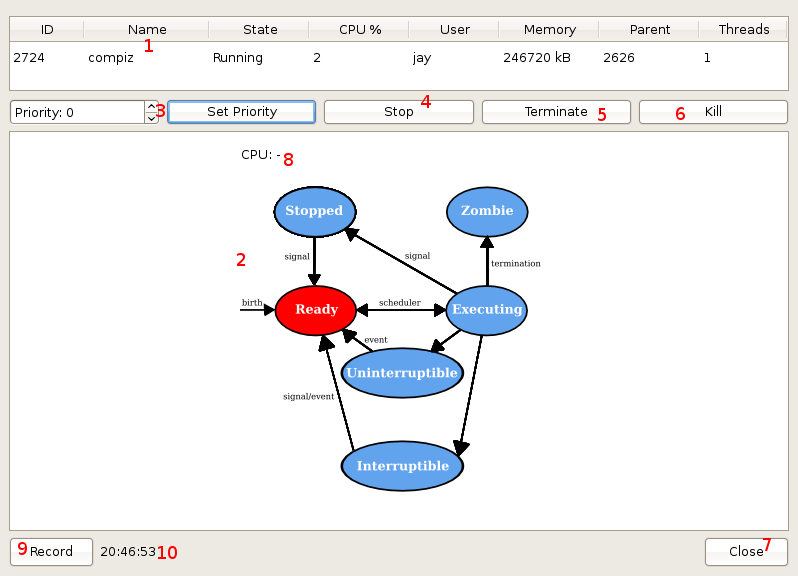

Once launched, this module presents you with a dialog window. Information in this dialog is relative to the process that was selected from the main window.
This dialog contains several elements:
This table shows precisely the same information as the table seen in the application's main window, however it is limited to displaying the information only for the particular process. Additionally, it updates more frequently than the other table; by default, the state of the process is read and output to the table every second.
The image shown here is a diagram illustrating the traditional UNIX-like process state model, and is taken from William Stallings' book "Operating Systems: Internals and Design Principles". This model is significantly different from the one currently employed by Linux-based operating systems, though the concepts remain the same.
The image will show the process state highlighted in red which most closely relates to the actual state as defined by the system. This is updated every time the "State" cell is changed in the above table. A different diagram image is actually loaded for every state change, but this should occur seamlessly, appearing as if it is a single, animated image.
Clicking this button will execute a KILL([pid], 9) system call, attempting to immediately end the appropriate process. However, before this is performed, you will be presented with a smaller dialog asking you to confirm your request. It looks as follows:
This warning should not be taken lightly. Ending any process in this way can indeed cause loss of data, among other, potentially more serious problems. It cannot be recommended to go through with this action unless the relevant process is completely unresponsive and the issue cannot be otherwise resolved. Even then, you are advised to consider the implications of continuing.
Now that you realise the risks of continuing to kill the task, you have two choices; click the "Cancel" button and take no further action, or click the "Yes" button and proceed with executing the system call. If you select to continue, the system call is immediately executed and if successful, the process will be killed and you will be returned to the main window; the visualisation dialog is then closed, as there is nothing to display if the process has ended. Note that the success of the kill function depends on your permissions as a user; attempting to kill a task such as init, for example, should fail as any user other than root.
Click this button to close the visualisation system, and return to the main window of the application.